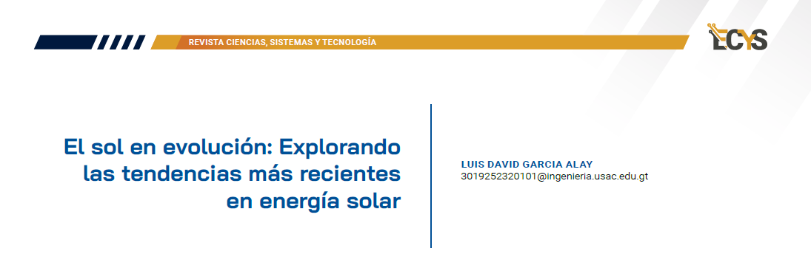
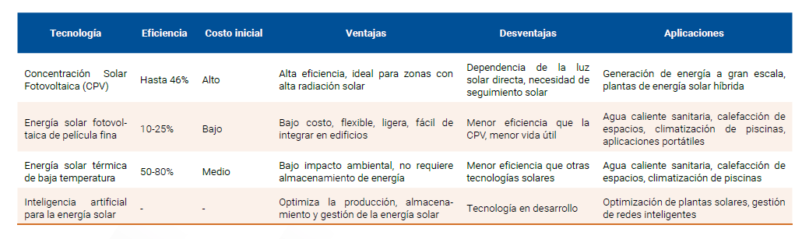

12 El sol en evolución: Explorando las tendencias más recientes en energía solar {#3.3 }

PALABRAS CLAVE: Eficiencia energética, Costos de generación de energía solar, Flexibilidad en aplicaciones solares, Generación descentralizada de energía, Orientación de paneles solares, Red eléctrica inteligente, Integración de fuentes renovables
12.1 Artículo
En medio del creciente interés por abordar la crisis climática y reducir la dependencia de fuentes de energía no renovables, las tecnologías solares emergentes han tomado la delantera como un componente esencial de un futuro energético sostenible. Las innovaciones no solo prometen una reducción significativa de las emisiones de gases de efecto invernadero, sino también una revolución en la forma en que aprovechamos la luz del sol para satisfacer nuestras necesidades energéticas. En este artículo, exploraremos con mayor profundidad cuatro áreas clave: la concentración solar fotovoltaica, la energía solar fotovoltaica de película fina, la energía solar térmica de baja temperatura y la aplicación de la Inteligencia Artificial (IA) en la energía solar.
Concentración solar fotovoltaica
La concentración solar fotovoltaica es una tecnología que utiliza espejos o lentes para concentrar la luz solar en pequeñas células fotovoltaicas altamente eficientes. Este enfoque aumenta significativamente la cantidad de luz que incide sobre las células, generando más electricidad. A medida que esta tecnología evoluciona, se espera que mejore la eficiencia y reduzca los costos, convirtiéndola en una opción cada vez más viable a gran escala.
Según datos recientes de la Agencia Internacional de Energía Renovable (IRENA), se espera que la capacidad instalada de energía solar concentrada alcance los 22 gigavatios para 2030, representando un aumento significativo desde los niveles actuales. Empresas como “SOLARRESERVE” han implementado exitosamente plantas de concentración solar con sistemas de almacenamiento térmico, proporcionando energía continua incluso después de la puesta del sol.
Energía solar fotovoltaica de película fina
La energía solar fotovoltaica de película fina se destaca por su flexibilidad y ligereza. Utilizando materiales como telururo de cadmio, telururo de indio y seleniuro de cobre, las células de película delgada pueden aplicarse en una variedad de superficies, incluyendo tejidos y materiales flexibles. Esta versatilidad la hace adecuada para aplicaciones integradas en la arquitectura y dispositivos portátiles, abriendo nuevas posibilidades para la generación descentralizada de energía.
Según el informe del Centro de Investigación de Energía Solar y Hidrógeno (CRESH), la cuota de mercado de las tecnologías de película delgada ha aumentado un 10% en los últimos dos años. Empresas como First Solar han liderado el camino en la producción a gran escala de paneles solares de película fina, permitiendo su implementación en proyectos de gran envergadura, como parques solares y sistemas de energía descentralizada.
Energía solar térmica de baja temperatura La energía solar térmica de baja temperatura se centra en aprovechar el calor del sol para aplicaciones domésticas e industriales. Mediante la captura de la radiación solar con colectores térmicos, se genera calor que puede utilizarse para calefacción, refrigeración y procesos industriales. A medida que la eficiencia de los sistemas de almacenamiento térmico mejora, esta tecnología se vuelve cada vez más atractiva para satisfacer las demandas energéticas de manera sostenible.
La energía solar térmica de baja temperatura ha ganado impulso en aplicaciones residenciales e industriales. Según la Asociación Solar Térmica Europea, se estima que la capacidad instalada de sistemas solares térmicos alcanzará los 500 gigavatios térmicos para 2030. Proyectos como el Distrito de Calefacción Solar de Silkeborg en Dinamarca demuestran el potencial de esta tecnología al proporcionar calefacción urbana sostenible a miles de hogares.
Inteligencia artificial para la energía solar La aplicación de la Inteligencia Artificial (IA) en el campo de la energía solar está transformando la forma en que gestionamos y optimizamos la generación de energía. Los algoritmos de aprendizaje automático pueden prever patrones climáticos, ajustar la orientación de paneles solares para maximizar la captura de luz y mejorar la eficiencia de la red eléctrica. La combinación de la IA con la energía solar no solo aumenta la eficiencia, sino también facilita la integración de fuentes renovables en la red eléctrica convencional.
Según un informe de la consultora energética Wood Mackenzie, el uso de algoritmos de aprendizaje automático puede aumentar la eficiencia de los sistemas fotovoltaicos hasta en un 15%. Empresas como Google han implementado IA en sus parques solares para prever y ajustar dinámicamente la orientación de los paneles solares, mejorando así la captura de luz y optimizando la producción de energía.
La Tabla, proporciona una visión general de las características clave, ventajas, desafíos, estado actual de desarrollo y ejemplos representativos de empresas o proyectos para cada forma de energía solar emergente mencionada en el artículo. Cada tecnología tiene sus propias fortalezas y aplicaciones específicas, contribuyendo de manera única a la diversificación y sostenibilidad de la matriz energética. (Revista internacional de contaminación ambiental, Mexico, 2019)
En conclusión, las energías solares emergentes presentan un horizonte prometedor para abordar los desafíos asociados con la crisis climática y la transición hacia un futuro energético más sostenible. Estas tecnologías emergentes no solo prometen reducir las emisiones de gases de efecto invernadero, sino también ofrecen soluciones innovadoras para satisfacer nuestras crecientes necesidades energéticas de manera sostenible. A medida que evolucionan y se implementan a mayor escala, estas energías solares emergentes tienen el potencial de desempeñar un papel crucial en la transición hacia un sistema energético más limpio y eficiente, contribuyendo así a la construcción de un futuro más sostenible para nuestro planeta.

12.2 Referencias
[1] Solórzano, Rafael. “Avances en la Concentración Solar Fotovoltaica.” Revista de Energía Renovable 32, no. 4 (2019): 567-580.
[2] Rodríguez, Maria. “Perspectivas de la Energía Solar Fotovoltaica de Película Fina.” Informe de Investigación en Energías Renovables (2020): 45-56.
[3] Blanch, Felipe. “Avances en la Energía Solar Térmica de Baja Temperatura.” Revista de Energías Renovables 28, no. 2 (2016): 210-225.
[4] Barbosa, Carlos. “Impacto de la Inteligencia Artificial en la Generación Solar.” Informe de Tecnologías Sostenibles (2021): 78-92.
[5] Luque López, A., Mata-Pérez, H., Andreev, V. M., & Lorenzo, E. (2017). Energía Solar Fotovoltaica (2ª ed.). Paraninfo.
[6] Ángel Raúl Arenas Aquino, Yasuhiro Matsumoto Kuwabara, Mina KleicheDray. Revista Internacional Contam. Ambient vol.33 no.3, Energía Solar y Marginación. Ciudad de México ago. 2019
[7] Flobers. (2023, 13 de enero). Inteligencia Artificial y Energías Renovables. URL: https://www.flobers.com
[8] Fundación Aquae. (2023, 22 de noviembre). Inteligencia artificial para producir energía solar. URL: https://www.fundacionaquae.org/wiki/inteligenciaartificial-para-producir-energia-solar/
[9] Green, M. A., Ho-Baillie, A., & Snaith, H. J. (2014). Emerging perovskite solar cells. Nature Photonics, 8(12), 904-911. DOI: 10.1038/nphoton.2014.259
[10] Green, M. A., & Ho-Baillie, A. (2018). Perovskite solar cells: an emerging photovoltaic technology. Materials Today, 21(8), 854-864. DOI: 10.1016/j.mattod.2018.07.010
[11] National Renewable Energy Laboratory (NREL). (2021). Concentrating Solar Power. URL: https://www.nrel.gov/research/re-concentrating-solar-power.html
[12] International Renewable Energy Agency (IRENA). (2020). Floating Solar PV: Technology Brief. URL: https://www.irena.org/
[13] National Renewable Energy Laboratory (NREL). (2021). Building-Integrated Photovoltaics. URL: https://www.energy.gov